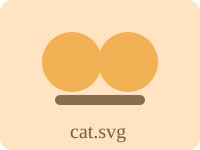
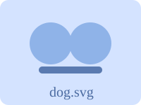

第 3 课练习 · 请求去哪了
图片区（页面载入时就会发出请求）


按钮区（按之前先打开 Network 面板）
前三个按钮需要联网（使用 httpbin.org 这个公共接口服务）。
发一个成功的请求（200）
发一个失败的请求（404）
发一个超慢的请求（等 3 秒）
加载一张不存在的本地图片
任务清单
打开 Network 面板（F12 → Network），然后 F5 刷新：数一数页面发出了几个请求？哪个是红色的？
点「成功的请求」按钮 → 在列表里点它 → 依次看 Headers / Payload / Preview 三个标签
点「失败的请求」按钮 → 红行 → 它的 Status 码是多少？
把 Throttling（网络限速）调成 Slow 3G，再点「超慢的请求」，盯着它的 Waterfall 变化；鼠标悬停到瀑布条上看各阶段耗时
点「不存在的本地图片」按钮 → 又一个红行，Status 显示什么？
用顶部的过滤器，试试只看 Img、只看 Fetch/XHR